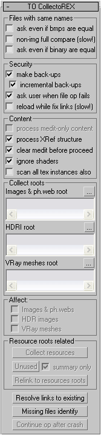
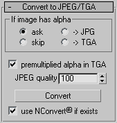
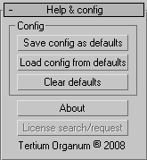

Свиток «TO CollectoREX» |
|
|  |
Files with same names Действия с файлами, при копировании которых в папки сбора выясняется, что файл с таким именем уже присутствует Ask even if bmps are equal – выводить диалог сравнения файлов с вариантами действий «Заменить», «Использовать имеющийся» и «Переименовать», даже если изображения полностью идентичны. Non-img full compare (slow!) – сравнивать файлы, не являющиеся изображениями, побайтно, если контрольные суммы совпадают. Не рекомендуется использовать, если копируются большие файлы. Если помимо изображений собираются только IES-файлы, эта опция может быть использована. Ask even if binary are equal – выводить диалог сравнения файлов (не изображений), даже если они идентичны Security Безопасность данных Make back-ups – создавать резервное сохранение перед каждой операцией утилиты, изменяющей файл сцены Incremental back-ups – при наличии файла резервного сохранения присваивать новому имя, состоящее из имени сцены, порядкового номера, и двойного расширения «max.backup»: myscene.max.backup, myscene1.max.backup, myscene2.max.backup и т.д. Если эта опция не выбрана, файл будет каждый раз перезаписываться (например, myscene.max.backup) Ask user when file op fails – выводить запрос о полной отмене текущей операции утилиты в случае ошибки файловой системы. Такие ошибки возникают, если какие-либо файлы заняты редактирующими их программами или при проблемах с оборудованием (неработающая сеть, осыпавшиеся носители). Если пользователь соглашается, выполнение функции отменяется, и он может попробовать устранить проблему сам, иначе такие файлы просто пропускаются. Чтобы отменить изменения в сцене, пользователь может перезагрузить сцену, поскольку при отмене сцена не сохраняется. Сколько файлов и какие именно файлы скопированы во время отмененной операции утилиты, может быть установлено по логу операции. Reload while fix (slow!) – перезагружать изображения во время изменения ссылок. Перезагрузка всех изображений занимает много времени и оперативной памяти (если сцена большая и включает значительное количество ресурсов, возможно получение сообщений от Windows об увеличении объема виртуальной памяти). Часто такая перезагрузка не является необходимой. Опцию следует выбирать только в том случае, когда вы выбираете «Использовать имеющийся» при совпадении имен копируемого и уже имеющегося в папке сбора файлов, вы уверены что имеющийся отличается от копируемого, и хотите увидеть его сразу после операции сбора. На небольших сценах переписывание ссылок с этой опцией несильно замедляет процесс, однако в большинстве случаев необходимости в ее выборе нет. Content Содержимое сцены Process medit-only content – собирать объекты (текстуры и материалы), присутствующие только в редакторе материалов и не примененные к объектам сцены. Process XRef structure – обрабатывать не только текущую сцену, но все ее XRef-дерево. Clear medit before proceed – очищать палитру редактора материалов перед операцией. Если выбрана эта опция, то опция Process medit-only content недоступна. Ignore shaders – игнорировать файлы с расширениями ".cgfx", ".mi", ".psh", ".vsh", ".fx", ".fxh", ".axml", ".msl". Сбрасывать опцию не рекомендуется, если только вы не используете собственные шейдеры, которые можно – и нужно – переносить с места на место (они не подгружают другие файлы). Scan all tex instances also – просканировать также все объекты типа TextureMap, имеющиеся в системе. Эта опция добавлена на случай, если алгоритм сбора упустит какие-либо текстуры, являющиеся частью плагинов, которые невозможно просканировать стандартным алгоритмом. Ввиду универсальности и абстрактного подхода алгоритма сбора, до настоящего времени такие текстуры найдены не были, опция добавлена на всякий случай. К сожалению, эта опция не решает проблем со материалами Maxwell Render и Fry Renderer. Collect Roots Папки сбора. Кнопка с многоточием рядом запускает диалог выбора папки Images & ph.web root – папка сбора изображений (кроме HDR) и IES-файлов. В эту же папку попадают шейдеры, если не выбрана опция Ignore shaders из категории Content HDRI root – папка сбора HDR-изображений VRay meshes root – папка сбора Vray-mesh’ей Affect На что воздействуют операции утилиты Images & ph.web – обрабатывать изображения и IES-файлы (также будут обработаны шейдеры, если не выбрана опция Ignore shaders) HDR images - обрабатывать HDR-изображения VRay meshes - обрабатывать VRay mesh’и Resource roots related Операции утилиты, напрямую относящиеся к папкам сбора. В операциях участвуют ресурсы выбранных в категории Affect типов. Осуществляется обработка всех ссылок в текущей сцене или (если выбрана опция Process XRef structure из категории Content) всего XRef-дерева текущей сцены. Collect resources – собрать ресурсы выбранных типов в соответствующие папки из категории Collect Roots Unused - найти в папках из категории Collect Roots ресурсы выбранных типов, на которые нет ни одной ссылки в текущей сцене или во всем XRef-дереве; если выбрана опция Summary only, то при обработке Xref-дерева окно со списком неиспользованных файлов выводится только по завершении обработки всего дерева, иначе окно выводится также после обработки каждого файла, показывая какие файлы не использованы именно текущей сценой Relink to resources roots – переписать все ссылки на ресурсы выбранных типов так, чтобы они указывали на файлы в соответствующих папках из категории Collect Roots Resolve links to existing – переписать все ссылки на ресурсы выбранных в категории Affect типов так, чтобы они указывали на реальные файлы, если сохраненные в сцене пути указывают на несуществующие файлы, но 3dsmax обнаружил их в другом месте (см. Реальный путь файла в Терминах) Missing files identity – идентификация объектов, в которых присутствуют ссылки на потерянные файлы Continue op after crash – продолжить последнюю операцию, начатую для XRef-дерева, но прерванную неустранимой ошибкой 3dsmax (см. ниже – Continue op after crash) |
Свиток «Convert to JPEG/TGA» |
|
|  |
Конвертация изображений ".tif", ".tiff", ".psd", ".png", ".tga" и ".bmp" в JPEG. Если изображение содержит альфа-канал, то оно не может быть сохранено без потери альфы в JPEG, поэтому пользователю предлагаются варианты. If image has alpha (ask/skip/JPG/TGA) – если изображение содержит альфа-канал, то: спросить пользователя / пропустить / все равно конвертировать в JPEG (с потерей альфа-канала) / конвертировать в TGA c RLE-сжатием (сохраняется альфа-канал) Premultiplied alpha in TGA – смешивать с цвет полупрозрачных пикселей цветом фона (при сохранении в TGA) JPEG quality – качество JPEG. Use NConvert© if exists – если NConvert© присутствует в папке утилиты («maxroot\scripts\tocollectorex» или «maxroot\scripts\tocollectorex Demo» для демо-версии), в корневой папке 3dsmax, в папке Windows или в папке Windows\System32, то она будет использована для конвертации в JPEG (вместо стандартного компрессора 3dsmax) Convert – запустить операцию конвертации всех изображений сцены или XRef-дерева (опции из категории Affect свитка TO CollectoREX не оказывают действия на эту операцию) |
Свиток «Help & config» |
|
|  |
Справка и настройки Настройки автоматически сохраняются вместе со сценой и загружаются во время загрузки сцены. Кроме того они могут быть глобально сохранены в ini-файле. Такие настройки называются глобальными умолчаниями (defaults) пользователя или настройками по умолчанию. Настройки по умолчанию загружаются, если текущая сцена не содержит настроек. Также можно загрузить их принудительно или сбросить в начальные значения. Config Настройки Save config as defaults – сохранить текущие настройки как значения по умолчанию Load config from defaults – загрузить настройки из значений по умолчанию Clear defaults – сбросить настройки по умолчанию в исходные значения About – запустить браузер с файлом справки License search/request (в демо-версии – How to buy) – произвести поиск подходящей лицензии в папке утилиты («maxroot\scripts\tocollectorex»), в корневой папке 3dsmax, в папке Windows или в папке Windows\System32. В демо-версии эту кнопку заменяет кнопка How to buy, которая выводит краткую информации о получении полной версии. |